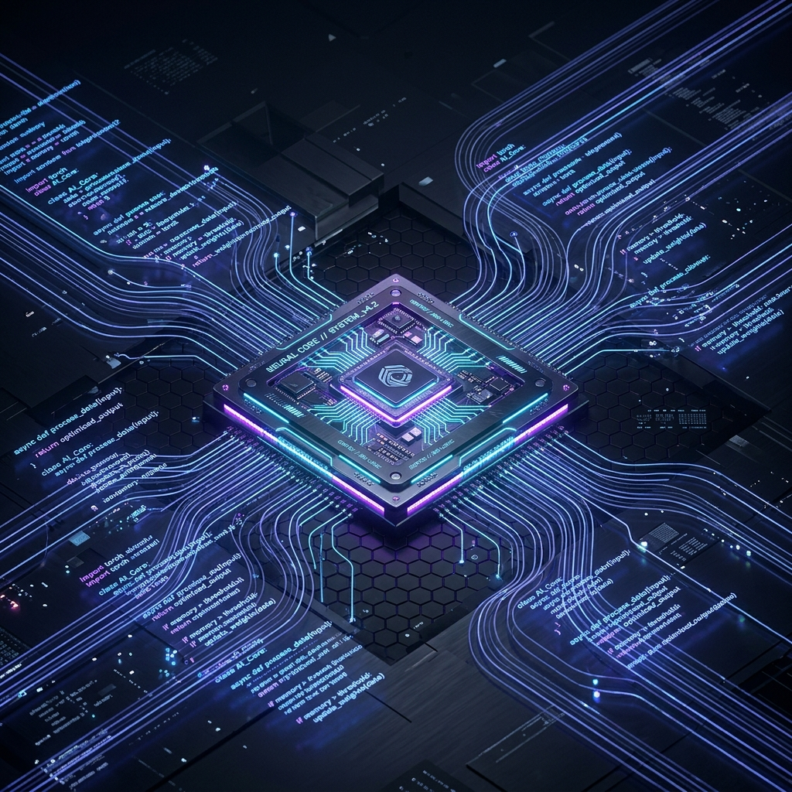

Haciendo que la electrónica y el
código trabajen en armonía
Hola, soy Braulio Agustin Jara. Creo sistemas interactivos robustos combinando la precisión del hardware con la escalabilidad y potencia del desarrollo de software de alta calidad.

Sobre Mí
Mi pasión y enfoque profesional radican en la unión del desarrollo de software de alta calidad y el rigor técnico de la ingeniería electrónica. A lo largo de mi formación, he comprobado que el software inteligente es el que dota de alma al hardware, y que comprender los circuitos impresos a nivel físico permite optimizar de manera exponencial las líneas de código del sistema.
En el ámbito de desarrollo, construyo aplicaciones con lenguajes robustos y modulares, y estructuro bases de datos sólidas y optimizadas, aplicando siempre buenas prácticas como el código limpio (Clean Code) y el desarrollo guiado por pruebas (TDD). En el bloque de electrónica, tengo experiencia modelando componentes en AutoCAD, simulando y diseñando layouts de PCB en KiCad/Altium, y analizando arquitecturas lógicas de control de memorias RAM.
Esta mentalidad híbrida me permite concebir proyectos tecnológicos de forma integral: desde la soldadura del circuito impreso y el microcontrolador hasta la estructuración de la API que almacena y consume la información en la nube.
Valores de Ingeniería
Enfoque Analítico Riguroso
Capacidad para desarmar problemas complejos en bloques lógicos ordenados y desarrollar código limpio y modular.
Pasión por el Hardware Tangible
Conciencia del comportamiento de señales eléctricas y control en tiempo real, minimizando fallas de sincronización.
Garantía de Robustez y Testeo
Convicción en la importancia del testeo unitario, simulación electrónica y verificación estricta de límites.
Mis Especialidades
Mi stack está clasificado en dos bloques específicos, permitiendo balancear el diseño lógico en código de software y la implementación estructural de hardware electrónico.
Desarrollo de Software
Lógica de aplicación, procesamiento de datos y arquitecturas escalables
Python
AvanzadoDominio en modularización, automatización de tareas y desarrollo de scripts estructurados. Capacidad de diseñar microservicios o interfaces de comunicación serial para recolectar, formatear y analizar información de hardware externo de manera robusta.
SQL
IntermedioEstructuración y normalización rigurosa de bases de datos relacionales. Habilidad para diseñar diagramas de entidad-relación, formular sentencias de consulta optimizadas y gestionar llaves foráneas y restricciones para asegurar la consistencia.
Wollok
TeóricoSólidos cimientos conceptuales en el paradigma de programación orientado a objetos. Capacidad excepcional para aplicar polimorfismo puro, herencia frente a composición, y metodologías ágiles de testing unitario exhaustivo.
Electrónica & Hardware
Diseño estructural, temporización digital y simulación de circuitos físicos
Diseño de Circuitos
Simulación & RuteoDiseño de diagramas esquemáticos y trazado físico de placas de circuito impreso (PCBs). Habilidad para seleccionar componentes, simular circuitos electrónicos bajo SPICE y comprender los efectos parásitos de las señales de alta frecuencia.
Memorias RAM & Arquitectura
Sistemas DigitalesProfundo entendimiento de la jerarquía de memorias e interfaces lógicas de control. Dominio de los buses de direcciones y datos, ciclos de lectura/escritura en celdas de memoria dinámica (DRAM) y estática (SRAM), y acoples de impedancia.
AutoCAD
Planos & ModeladoCreación y ajuste preciso de planos de montaje mecánico y de componentes bidimensionales. Habilidad para diseñar o adecuar planos de gabinetes protectores que aseguren la contención física exacta de las placas de circuito electrónico.
¿Hablamos sobre tu próximo proyecto tecnológico?
Ya sea que necesites implementar scripts robustos y base de datos, simular y rutear una placa de circuito, o conceptualizar una arquitectura integrada, ¡estaré encantado de que colaboremos!